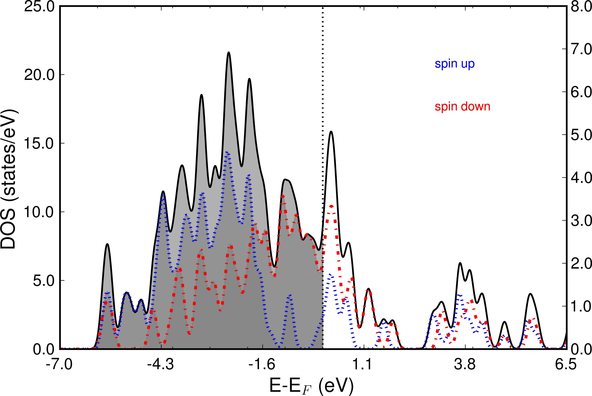
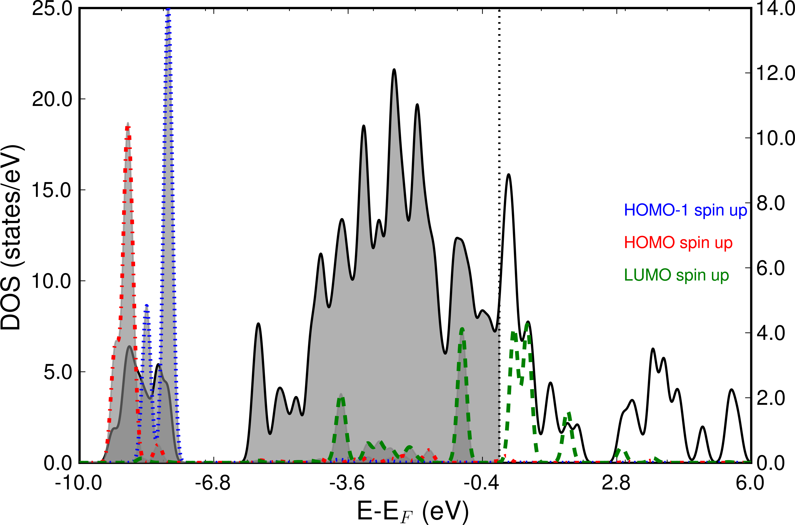

Molecular Orbital (MO) projected Density-of-States - MolPDOS¶
Basics¶
This mode allows to generate projections and pDOS plots with respect to any molecular orbital (MO). To run it one has to add following keyword to <seed>.param
%BLOCK DEVEL_CODE
MolPDOS
%ENDBLOCK DEVEL_CODE
The projection data is produced by CASTEP after the SCF task and is written to files called <seed>.molpdos_state_<#>_<#>, where the two numbers correspond to the number and the spin of the specified reference orbital from the reference checkfile.
At the end of the <seed>.castep file the projection is commented in the following way:
Successfully read .deltascf file!
Calculating MolPDOS weights
+-------------------INPUT PARAMETERS-------------------+
Taking band from model gasphase
MolPDOS state 1
MolPDOS band nr. 4
MolPDOS band has spin 1
MolPDOS state 2
MolPDOS band nr. 5
MolPDOS band has spin 1
MolPDOS state 3
MolPDOS band nr. 6
MolPDOS band has spin 1
MolPDOS state 4
MolPDOS band nr. 4
MolPDOS band has spin 2
MolPDOS state 5
MolPDOS band nr. 5
MolPDOS band has spin 2
MolPDOS state 6
MolPDOS band nr. 6
MolPDOS band has spin 2
|DeltaSCF| Reading projection data from model file gs.check
Writing file no.molpdos_state_4_1
Writing file no.molpdos_state_5_1
Writing file no.molpdos_state_6_1
Writing file no.molpdos_state_4_2
Writing file no.molpdos_state_5_2
Writing file no.molpdos_state_6_2
These files, together with the <seed>.bands file can be post-processed with the MolPDOS program with the following command
MolPDOS <seed>
This will write output in the <seed>.castep with following header.
#############################################
# #
# #
# MolPDOS -CASTEP Post-processor #
# #
# by R. J. Maurer #
# #
# #
#############################################
In addition it will write files for the total DOS (Total-DOS.dat), for the two spin channels if the calculation was spin polarized (Total-DOS_spin1.dat, Total-DOS_spin2.dat), and for the MolPDOS ( <#>_spin<#>_<output_filename). The keywords for the .deltascf and .molpdos files can be found below.
Keywords allowed in <seed>.deltascf¶
In the .deltascf and .molpdos files, the keyword title plus colon takes exactly 23 columns (A20,3X). The keyword content starts after that. Lines with ‘#’ are ignored.
- WARNING
- The number of blanks between the keywords does count!! The best thing is to copy and modify the example from the manual.
| keyword | multiple appearance | arguments and FORTRAN format |
|---|---|---|
| deltascf_iprint | No | <integer I> |
| molpdos_state | Yes | <# of ref. state I6>1X<spin of ref. state I6> |
| deltascf_file | No | <string len=40 filename without .check> |
Example .deltascf file:
deltascf_iprint : 2
deltascf_file : gasphase.check
molpdos_state : 31 1
molpdos_state : 33 1
molpdos_state : 35 1
molpdos_state : 36 2
In this example, 4 different MOs with the indices 31, 33, 35, and 36 contained in the wavefunction file gasphase.check are projected from the wavefunction of the current system.
Keywords allowed in <seed>.molpdos¶
| keyword | multiple appearance | arguments and FORTRAN format |
|---|---|---|
| molpdos_state | Yes | <# of ref. state I6>1X<spin of ref. state I6> |
| molpdos_bin_with | No | real number, default=0.01 |
| molpdos_smearing | No | real number, default=0.05 |
| molpdos_scaling | No | real number, default=1.0, scales MolPDOSes |
| no_fermi_shift | No | no argument, logical, removes fermishift |
| axis_energy_margin | No | real in eV default=0.0eV |
| output_filename | No | <string len=40 filename> |
Example .molpdos file:
molpdos_state : 34 1
molpdos_state : 35 1
molpdos_state : 36 1
molpdos_state : 33 1
molpdos_bin_width : 0.02
molpdos_smearing : 0.05
molpdos_scaling : 1.00
axis_energy_margin : 2.00
output_filename : MolPDOS.dat
Example 4: NO molecule on Ni(001)¶
For this example we calculate the projected MOs of a NO molecule on a Ni(001) slab. In the following the required input files are:
no-on-ni001.param, no-on-ni001.cell, no-on-ni001.deltascf, no-on-ni001.molpdos, gasphase.cell, gasphase.param, gasphase.check
no-on-ni001.param
%BLOCK DEVEL_CODE
MolPDOS
%ENDBLOCK DEVEL_CODE
task: SinglePoint
spin_polarized : True
cut_off_energy : 400.0
elec_energy_tol : 1e-07
fix_occupancy : False
iprint : 1
max_scf_cycles : 200
metals_method : dm
mixing_scheme : Pulay
nextra_bands : 10
num_dump_cycles : 0
opt_strategy_bias : 3
smearing_scheme : Gaussian
smearing_width : 0.1
xc_functional : RPBE
no-on-ni001.cell
%BLOCK LATTICE_CART
3.5240000000 0.0000000000 0.0000000000
0.0000000000 3.5240000000 0.0000000000
0.0000000000 0.0000000000 23.0000000000
%ENDBLOCK LATTICE_CART
%BLOCK POSITIONS_ABS
Ni 1.762000 0.000000 1.762000
Ni 0.000000 1.762000 1.762000
Ni 0.000000 0.000000 3.524000
Ni 1.762000 1.762000 3.524000
Ni 1.762000 0.000000 5.286000
Ni 0.000000 1.762000 5.286000
N 1.7620 0.0000 7.0196
O 1.7620 -0.0000 8.1902
%ENDBLOCK POSITIONS_ABS
%BLOCK IONIC_CONSTRAINTS
1 Ni 1 1 0 0
2 Ni 1 0 1 0
3 Ni 1 0 0 1
4 Ni 2 1 0 0
5 Ni 2 0 1 0
6 Ni 2 0 0 1
7 Ni 3 1 0 0
8 Ni 3 0 1 0
9 Ni 3 0 0 1
10 Ni 4 1 0 0
11 Ni 4 0 1 0
12 Ni 4 0 0 1
13 Ni 5 1 0 0
14 Ni 5 0 1 0
15 Ni 5 0 0 1
16 Ni 6 1 0 0
17 Ni 6 0 1 0
18 Ni 6 0 0 1
%ENDBLOCK IONIC_CONSTRAINTS
FIX_ALL_CELL : True
KPOINTS_MP_GRID : 2 2 1
KPOINTS_MP_OFFSET : 0.25 0.25 0.25
no-on-ni001.deltascf
deltascf_file : gasphase
molpdos_state : 4 1
molpdos_state : 5 1
molpdos_state : 6 1
molpdos_state : 4 2
molpdos_state : 5 2
molpdos_state : 6 2
no-on-ni001.molpdos
molpdos_state : 4 1
molpdos_state : 5 1
molpdos_state : 6 1
molpdos_state : 4 2
molpdos_state : 5 2
molpdos_state : 6 2
molpdos_bin_width : 0.01
molpdos_smearing : 0.10
molpdos_scaling : 1.00
axis_energy_margin : 2.00
output_filename : MolPDOS.dat
gasphase.cell
%BLOCK LATTICE_CART
3.5240000000 0.0000000000 0.0000000000
0.0000000000 3.5240000000 0.0000000000
0.0000000000 0.0000000000 23.0000000000
%ENDBLOCK LATTICE_CART
%BLOCK POSITIONS_ABS
N 1.7620 0.0000 7.0196
O 1.7620 -0.0000 8.1902
%ENDBLOCK POSITIONS_ABS
FIX_ALL_CELL : True
KPOINTS_MP_GRID : 2 2 1
KPOINTS_MP_OFFSET : 0.25 0.25 0.25
gasphase.param
task: SinglePoint
spin_polarized : True
cut_off_energy : 400.0
elec_energy_tol : 1e-07
fix_occupancy : False
iprint : 1
max_scf_cycles : 200
metals_method : dm
mixing_scheme : Pulay
nextra_bands : 10
num_dump_cycles : 0
opt_strategy_bias : 3
smearing_scheme : Gaussian
smearing_width : 0.1
xc_functional : RPBE
After generating gasphase.check by running CASTEP on the gasphase.param and gasphase.cell files, we execute CASTEP and post-process with MolPDOS. This will write x-y data files for the Total DOS, the separate spin channels, and the MolPDOS peaks.
The following image shows the Total DOS and the two spin channels.
{kind=link}
The next picture shows the frontier orbitals of spin channel 1 projected on the total DOS. Especially the LUMO shows strong hybridization with the Nickel d-bands and also is partially occupied. The left scale refers to the total DOS, whereas the right y-scale shows the peak height of the projected MOs.
{kind=link}
Example 5: Putting it all together: CO on Cu(100)¶
For this example we analyze the electronic structure of a CO molecule in a c(2x2) overlayer on Cu(100), before we use this information to calculate the correct electronic transitions.
In the following, the required input files are:
co-on-cu100.param, co-on-cu100.cell, co-on-cu100.deltascf, gasphase.cell, gasphase.param, gasphase.deltascf
co-on-cu100.param
#%BLOCK DEVEL_CODE
#DEVEL_CODE : DeltaSCF
#%ENDBLOCK DEVEL_CODE
#reuse: default
task: SinglePoint
spin_polarized : False
cut_off_energy : 400.0
elec_energy_tol : 1e-07
fix_occupancy : False
iprint : 1
max_scf_cycles : 200
metals_method : dm
mixing_scheme : Pulay
nextra_bands : 50
num_dump_cycles : 0
opt_strategy_bias : 3
smearing_scheme : Gaussian
smearing_width : 0.1
xc_functional : PBE
co-on-cu100.cell
%BLOCK LATTICE_CART
0.0000000000000000 -3.6320000000000001 0.0000000000000000
3.6320000000000001 0.0000000000000000 0.0000000000000000
0.0000000000 0.0000000000 23.614900000
%ENDBLOCK LATTICE_CART
%BLOCK POSITIONS_ABS
Cu 0.02575600 -3.70271100 -7.26400000
Cu 1.84175600 -1.88671100 -7.26400000
Cu 0.02575600 -1.88671100 -5.44800000
Cu 1.84175600 -3.70271100 -5.44800000
Cu 0.02575600 -3.70271100 -3.63200000
Cu 1.84175600 -1.88671100 -3.63200000
Cu 0.02575600 -1.88671100 -1.81600000
Cu 1.84175600 -3.70271100 -1.81600000
Cu 0.02575600 -3.70271100 0.00000000
Cu 1.84175600 -1.88671100 0.00000000
C 0.02575600 -3.70271100 1.90000000
O 0.02575600 -3.70271100 3.00000000
%ENDBLOCK POSITIONS_ABS
FIX_ALL_CELL : True
KPOINTS_MP_GRID : 2 2 1
KPOINTS_MP_OFFSET : 0.25 0.25 0.25
co-on-cu100.deltascf
deltascf_iprint : 1
deltascf_mode : 3
deltascf_file : gasphase.check
deltascf_constraint : 5 0.5000 1
deltascf_constraint : 6 0.5000 2
gasphase.param
#reuse: default
task: SinglePoint
spin_polarized : False
cut_off_energy : 400.0
elec_energy_tol : 1e-07
fix_occupancy : False
iprint : 1
max_scf_cycles : 200
metals_method : dm
mixing_scheme : Pulay
nextra_bands : 50
num_dump_cycles : 0
opt_strategy_bias : 3
smearing_scheme : Gaussian
smearing_width : 0.1
xc_functional : PBE
gasphase.cell
%BLOCK LATTICE_CART
0.0000000000000000 -3.6320000000000001 0.0000000000000000
3.6320000000000001 0.0000000000000000 0.0000000000000000
0.0000000000 0.0000000000 23.614900000
%ENDBLOCK LATTICE_CART
%BLOCK POSITIONS_ABS
C 0.02575600 -3.70271100 1.90000000
O 0.02575600 -3.70271100 3.00000000
%ENDBLOCK POSITIONS_ABS
FIX_ALL_CELL : True
KPOINTS_MP_GRID : 2 2 1
KPOINTS_MP_OFFSET : 0.25 0.25 0.25
gasphase.deltascf
deltascf_mode : 1
deltascf_iprint : 1
deltascf_constraint : 5 0.5000 1 5 5
deltascf_constraint : 6 0.5000 1 6 6
deltascf_smearing : 0.01
We start out by calculating the groundstate of the adsorbed molecule and the ground state of the gasphase molecule and by analyzing the MOlPDOS of CO on Cu(100).
- GOOD TO KNOW
- If you ever forget the correct input for <seed>.deltascf or <seed>.molpdos, just run the MolPDOS tool without seed. The printed information is all you need!
TO DO